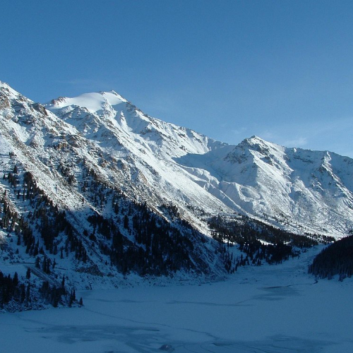
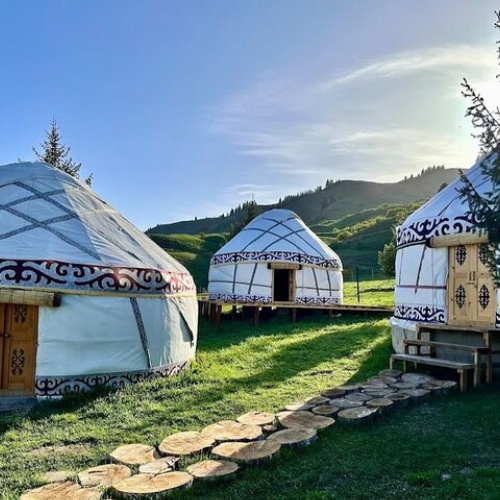

Big Almaty Lake is a beautiful mountain lake near Almaty, and the water there is very clear and turquoise.
Go somewhere
Kolsai Lakes and Kaindy Lake are famous natural places in Kazakhstan, and they are known for their beautiful mountains and clear water.
Go somewhereShe is a kind and beautiful person. She has a warm smile and charming eyes. The most beautiful on this list.
Go somewhere